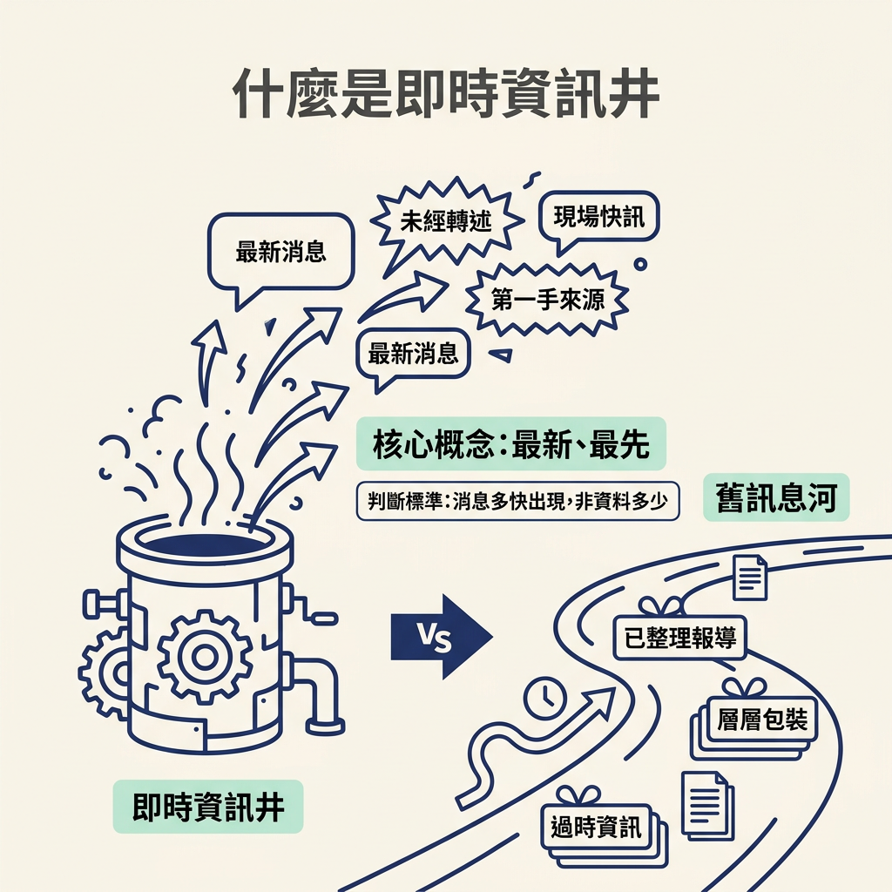
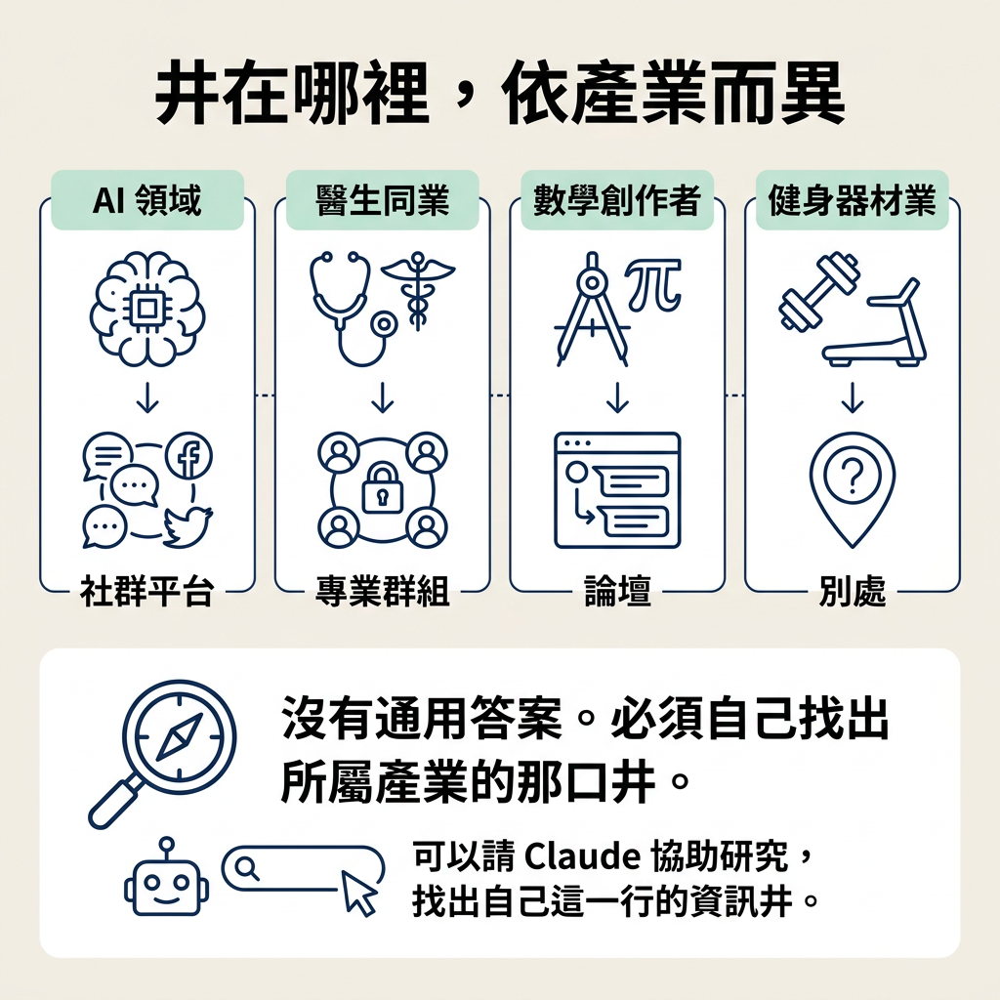

你會辨認自己領域的「即時資訊井」（well of knowledge）：也就是最新消息最先出現的地方。找到這個資訊來源後，你就能持續補充新知，讓內容跟得上產業變化，也讓觀眾看見你的專業。
上一節談到，點子的起點是你自己的經驗與專業。但要持續產出內容，光靠過去累積的經驗還不夠，你也需要新的資訊當燃料。如果每天吸收的都是別人整理過的二手結論，你掌握的「最新消息」可能早已慢了半拍，久了也很難提出新觀點。
所以，這一步要找的是你所在利基的「即時資訊井」。它可能是一個地點、一個社群，或一個帳號；重點是，你這一行的新消息會先在那裡出現。找到它，你就有了固定補充資訊的來源，也能把它加入接下來要介紹的 skill 來源清單。
講師的定義很簡單：well of knowledge，就是你這個產業裡最新資訊最先出現的地方。換成白話就是：「放眼全世界，這個領域的最新消息最先在哪裡出現？」以講師做的 AI 為例，他要找的就是 AI 新消息最先出現的地方。
關鍵在「最新」和「最先」。井不是收錄最完整的資料庫，而是消息還新鮮、還沒被整理或轉述的來源。判斷一個地方是不是井，看的不是資料有多少，而是消息出現得有多快。

講師接著把即時資訊和觀眾為什麼追蹤你連在一起。想讓觀眾追蹤你，你得展現自己熟悉這個領域；其中一種方式，就是持續跟上最新知識。
講師用一個反例說明：如果他開始談 OpenAI 那間「2023 年的 GPT app store」，觀眾對他專業的信任可能就會打折。問題不一定是資訊本身錯了，而是它已經過期。做教育型內容的人，需要持續更新對工具的認識，因為觀眾正是為了這些專業資訊而來。
換句話說，持續追蹤最新消息，不只是為了自己，也是為了觀眾對你的判斷。你不必假裝什麼都懂，但也要避免端出一則大家早已知道的舊消息。
先記住一件事：不同產業的資訊井可能完全不同。AI 的井可能在 X（原因會在下一節說明），但你的領域不一定。講師舉了幾個例子：
因此，不要直接套用別人的答案。講師建議，你可以自己確認，也可以請 Claude 協助研究，找出自己這一行的資訊井。

找到幾個候選來源後，可以用下面幾個線索比較，看看它們更像即時資訊井，還是整理過的二手資訊：
| 檢查線索 | 偏向「井」 | 偏向「二手整理」 |
|---|---|---|
| 時間差 | 新消息出現得最快 | 總比原處晚一截 |
| 加工程度 | 原始、未經包裝 | 已整理成別人的結論 |
| 誰在講 | 第一線的人、官方、同好 | 轉述者、內容聚合者 |
| 對你的用處 | 每天餵你新燃料 | 你只是重複別人的進度 |
如果一個來源更新得比你平常看的地方快，而且內容來自你這一行的同儕或官方，它就可能是你的井。找到後，講師提醒你把它加入下一節要介紹的 skill 來源清單，讓機器也能一起追蹤。
即時資訊井是你這一行最新消息最先出現的地方。它會因產業而異，可能是論壇、群組或社群。掌握最新資訊能幫助你展現專業；如果分享的內容過期，觀眾對你的信任就可能打折。找到自己的井，你就有了固定補充點子燃料的來源。
現在你已經知道要去哪裡找最新消息。井裡的資訊也有不同來源：有些是事情發生時就出現的第一手資訊，有些則是經過整理、晚了一拍的二手內容。下一步會帶你分辨兩者。